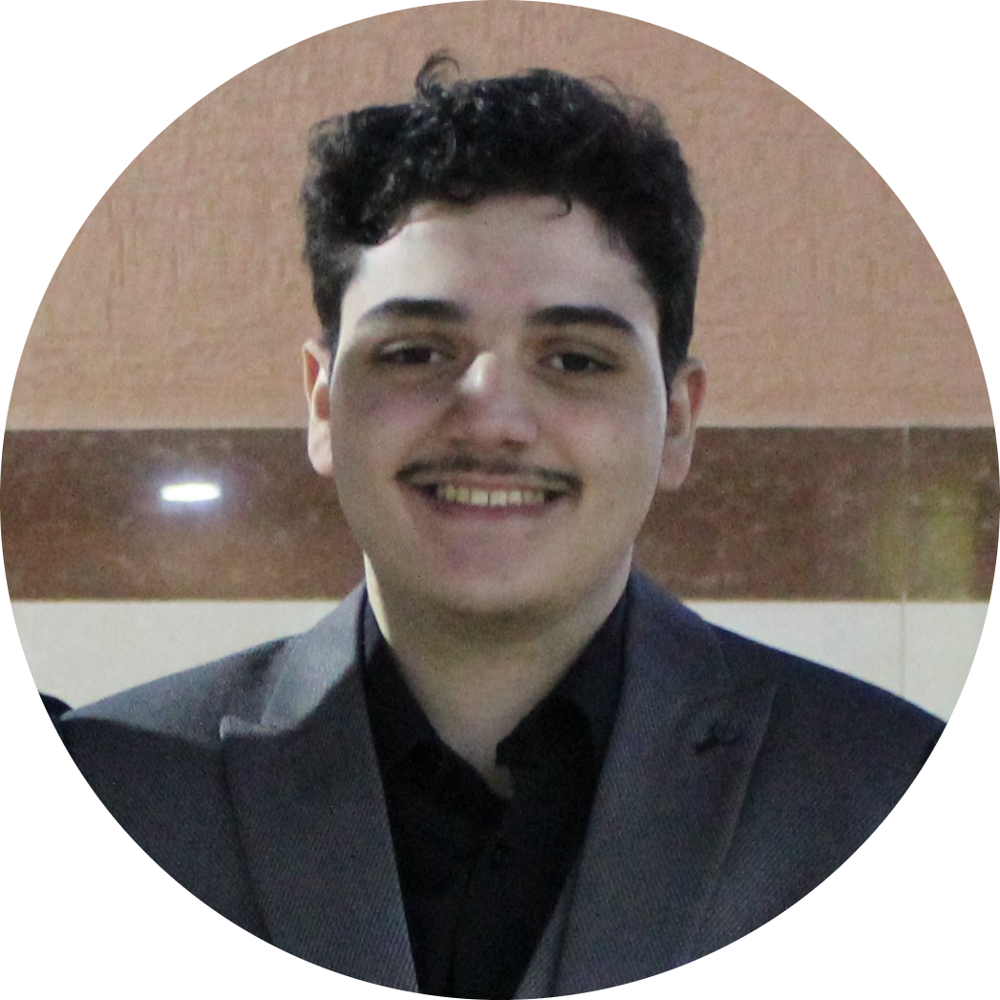

|  | Faisal Elayyanmy major is computer science computer science |
I am a professor at Cornell University. My research focuses on algorithms and networks, the roles they play in large-scale social and information systems, and their broader societal implications. My work has been supported by an NSF Career Award, an ONR Young Investigator Award,
1st grade Al Ehssan School and 2nd grade
3rd to High School AL FAISALIAH School
| Birth | Name | birth address |
|---|---|---|
| 2001 | Faisal | Riyadh |
| web development | ⭐⭐⭐⭐ | folding paper | ⭐⭐⭐⭐ |
| mobile development | ⭐ | drawing | ⭐ |